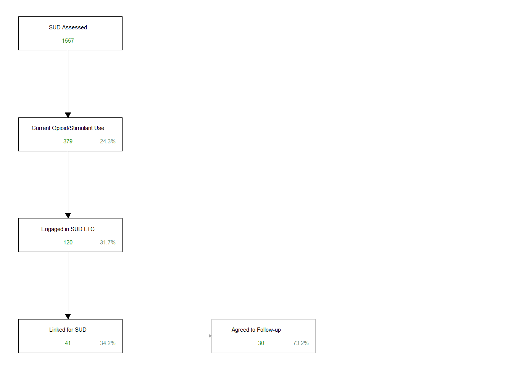
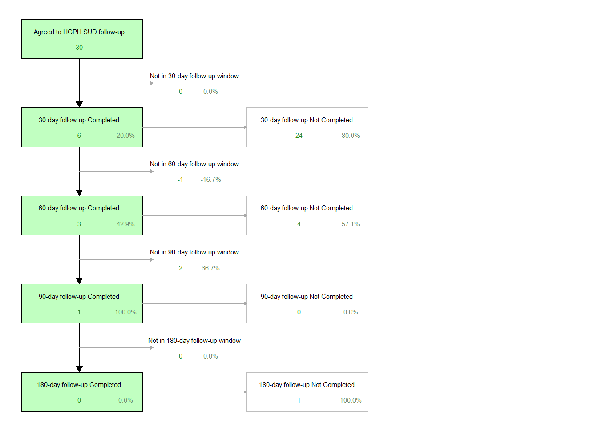

| Date | SUD Assessed | Current Opioid/Stimulant Use | Engaged in SUD LTC | Linked for SUD | Agreed to Follow-up |
|---|---|---|---|---|---|
| 2024-08-01 | 158 | 41 | 21 | 5 | 3 |
| 2024-09-01 | 134 | 31 | 12 | 6 | 2 |
| 2024-10-01 | 172 | 46 | 24 | 10 | 10 |
| 2024-11-01 | 112 | 24 | 8 | 2 | 2 |
| 2024-12-01 | 76 | 14 | 4 | 1 | 0 |
| 2025-01-01 | 100 | 28 | 13 | 5 | 5 |
| 2025-02-01 | 74 | 26 | 9 | 5 | 5 |
| 2025-03-01 | 101 | 28 | 5 | 2 | 2 |
| 2025-04-01 | 138 | 31 | 6 | 1 | 1 |
| 2025-05-01 | 240 | 42 | 7 | 0 | 0 |
| 2025-06-01 | 208 | 55 | 10 | 4 | 4 |
| 2025-07-01 | 240 | 59 | 20 | 8 | 8 |
| 2025-08-01 | 236 | 73 | 16 | 6 | 4 |
| 2025-09-01 | 264 | 62 | 22 | 4 | 1 |
| 2025-10-01 | 322 | 59 | 24 | 6 | 1 |
| 2025-11-01 | 151 | 35 | 15 | 4 | 0 |
Substance Use Disorder (SUD)
[Description]
HCPH SUD Data
The Hamilton County Public Health (HCPH) substance use disorder (SUD) data agreement was initiated in July 2024 and the agreement was for data collected starting August 1, 2024 through July 31, 2025. This agreement is for EIP to provide HCPH with data regarding SUD screening and follow-up at periodic intervals to determine retention in care. The agreement was to provide data for any patient that endorses any opioid and/or stimulant use, the demographic information of these individuals, as well as their treatment need and follow-up for retention in care. This agreement is for patients seen at UC Medical Center only.
Since the data that HCPH requested for follow-up centered around those that were linked to care, it was decided that aggregate data would be collected for all those individuals screened for SUD, those that endorse current opioid/stimulant use within the past year, those that are engaged with the EIP Linkage to Care process, and those that are successfully linked to care. Then, record-level data would be provided for those that agree to follow-up questionnaires at 30, 60, and 180 day time points, with the follow-up questions from HCPH documented.
EIP SUD assessments are determined based on the AUDIT-C for alcohol or NIDA-Modified ASSIST for all other substances. Aggregate-level data is presented here for the following: number screened for SUD, number endorsing current opioid/stimulant use (within the past year), number engaged in SUD linkage, number successfully linked to care, and the number that agreed to follow-up beyond linkage success. As of the start of the data sharing agreement for this program, there have been a total of 2726 encounters where an individual was screened for SUD. The number of encounters where an individual has endorsed current substance use (within the past year) for opioids and/or stimulants were 654 encounters (24.0% of all those screened for SUD, 654/2726). After a conversation with the EIP HPA and/or LTC Coordinator, there was a total of 216 encounters where the individual engaged in our linkage process specifically for SUD (33.0% of all those who endorsed current opioid/stimulant use, 216/654). For those that engaged with our SUD LTC process, there were a total of 69 encounters where the individual was successfully linked to care for SUD (31.9% of all those engaged in SUD LTC, 69/216). There were then a total of 48 encounters where the individual agreed to additional follow-up beyond successful linkage for SUD (69.6% of all those successfully linked to care for SUD, 48/69). The table below summarizes this monthly aggregate-level data for SUD screening and linkage to care at UCMC ED since the start of this program.
The flow diagram below highlights the total aggregate-level data with numbers for each step in the process, with total numbers so far for the project. The numbers represented here are a visual representation of the numbers presented in the text and table above.

The remaining data covers the follow-up efforts towards this project, specifically the eligibility and completion of the 30/60/180 day time points. Everyone who agreed to the additional follow-up is eligible for the 30 day follow-up as long as their follow-up date is 30-days after their successful linkage to care date for SUD. Eligibility for 60-day follow-up requires the individual complete their 30-day follow-up and that we have reached 60-days post-linkage. Eligibility for the 180-day follow-up requires successful completion of their 60-day follow-up and that we have reached 180-day post-linkage. There were a total of 48 encounters where the individual agreed to the HCPH 30/60/180 day follow-ups after successful linkage (69.6% of all those successfully linked to care for SUD, 48/69). These are the individuals that are being followed-up with by our linkage team for responses to the HCPH 30/60/180 day follow-up surveys.
There were a total of 47 encounters (97.9% of all those successfully linked to care for SUD) where the individual was eligible for their 30 day follow-up, and our linkage team was successfully able to complete 5 of these 30 day follow-ups (10.6% of all those eligible for their 30 day follow-up, 5/47).
There were a total of 6 encounters (120.0% of all those who successfully completed their 30 day follow-up) where the individual was eligible for their 60 day follow-up, and our linkage team was successfully able to complete 2 of these 60 day follow-ups (33.3% of all those eligible for their 60 day follow-up, 2/5).
There were a total of 1 encounters (100.0% of all those who successfully completed their 60 day follow-up) where the individual was eligible for their 180 day follow-up, and our linkage team was successfully able to complete 0 of these 180 day follow-ups (0.0% of all those eligible for their 180 day follow-up, 0/2).
The flow diagram below summarizes all of the follow-up data for those individuals who were successfully linked to care for SUD and agreed to additional follow-up.

Ask, Advise, Refer (AAR)
The HCPH Ask, Advise, Refer partnership was signed on April 26, 2024. This partnership was a pledge from EIP to HCPH that we would increase education and awareness of tobacco cessation and cessation-related services. Through this pledge, EIP promised to participate in tobacco use screening and referral to cessation resources, namely the Ohio Tobacco Quit Line. The program officially started documenting referrals for tobacco cessation referrals on August 13, 2024.
EIP staff screen for tobacco use by asking about current tobacco use on the risk assessment. If the patient endorses current tobacco use (either daily or less than daily), they are instructed to provide tobacco cessation referrals to the Ohio Tobacco Quit Line, and document that the referral was provided in their REDCap record.
Since the start of this program in August, there have been a total of 577 encounters where an individual was screened for their tobacco use history, with a total of 231 that endorse current tobacco use (40.0% of all those screened, 231/577). For all those who have endorsed current tobacco use, EIP has provided 0 referrals to the Ohio Tobacco Quit Line (0.0% of all those who endorse current tobacco use, 0/231). The table below summarizes the monthly tobacco assessments, the number who endorse current tobacco use, and the number that were referred for tobacco cessation through the Ohio Tobacco Quit Line.
| Date | Tobacco Assessments | Current Tobacco Use | Referred for Tobacco Cessation |
|---|---|---|---|
| 2024-08-01 | 20 | 6 | 0 |
| 2024-09-01 | 38 | 13 | 0 |
| 2024-10-01 | 37 | 5 | 0 |
| 2024-11-01 | 3 | 3 | 0 |
| 2024-12-01 | 16 | 9 | 0 |
| 2025-01-01 | 15 | 9 | 0 |
| 2025-02-01 | 11 | 4 | 0 |
| 2025-03-01 | 12 | 9 | 0 |
| 2025-04-01 | 8 | 3 | 0 |
| 2025-05-01 | 16 | 8 | 0 |
| 2025-06-01 | 15 | 6 | 0 |
| 2025-07-01 | 39 | 19 | 0 |
| 2025-08-01 | 75 | 31 | 0 |
| 2025-09-01 | 69 | 33 | 0 |
| 2025-10-01 | 138 | 50 | 0 |
| 2025-11-01 | 65 | 23 | 0 |
Harm Reduction
Fentanyl Test Strips
During the EIP assessment and discussion with the patient/client, the HPA asks questions regarding the individual’s knowledge of harm reduction tools. More specifically, the individual is asked whether they are aware of tools used to test drugs for the presence of fentanyl, meaning their knowledge of fentanyl test strips (FTS). This assessment of their knowledge of harm reduction tools is available for all those receiving an EIP assessment, regardless of any indication of their own history of substance use. The total number of assessments where this question was answered was 1234 (17.2% of all assessments completed, 1234/7188). This question asks for a yes/no response, and the total number of assessments where the indiviudal responded that they were aware of FTS was 617 (50.0% of all those asked about their knowledge of FTS, 617/1234). If they stated that they were aware of FTS, the indiviudal is then asked about their prior use of these harm reduction tools. The total number of assessments where the individual stated that they were aware of FTS that answered this follow-up question was 527 (85.4% of all assessments where the individual was aware of FTS, 527/617). Again, this is a yes/no response, and the total number of assessments where the individual stated that they have used FTS before was 289 (54.8% of all assessments where the individual was asked about prior FTS use, 289/527).
For those individuals that screened positive for any type of SUD through the EIP assessment, the number of assessments where they were also assessed for their knowledge of FTS was 420 (25.0% of all SUD positive assessments, 420/1683), with 234 stating that they were aware of FTS (55.7% of all SUD positive assessments where the individual was also assessed for FTS knowledge, 234/420). The number of assessments where the individual screened positive for any SUD where they were also assessed for their prior use of FTS was 212 (90.6% of all SUD positive assessments that were aware of FTS, 212/234), with 116 endorsing prior use of FTS (54.7% of all SUD positive assessments also assessed for prior FTS use, 116/212).
During each encounter, individuals are also offered these harm reduction tools and provided with FTS if they are interested in receiving them at that time. The number of assessments where individuals who were asked whether they would be interested in recieving FTS was 1245 (17.3% of all assessments, 1245/7188), with 495 stating that they were interested (39.8% of all assessed for interest in receiving FTS, 495/1245). Once they stated that they had an interst in recieving FTS during their encounter, the HPA documents whether they were able to provide the individual with FTS and how many they were given for reporting purposes. The number of times the individual was provided with FTS during their encounter was 467 (94.3% of all times when the individual stated interest in receiving FTS, 467/495).
For those that screened positive for any type of SUD during their encounter, the number of assessments where individuals who were asked whether they would be interested in recieving FTS was 422 (25.1% of all assessments where the individual screened positive for a SUD, 422/1683), with 204 stating that they were interested (48.3% of all SUD positive assessments also assessed for interest in receiving FTS, 204/422). The number of times where the individual screened positive for a SUD and was provided with FTS during their encounter was 194 (95.1% of all times when the individual screened SUD positive and stated interest in receiving FTS, 194/204).
The total number of FTS distributed is reported on a monthly basis required for being a Project Dawn site, starting August 1st, 2023. Therefore, the total number of strips distributed are counted on a monthly basis and provided in the graph.
Naloxone Distribution
Work in progress
Naloxone distribution is documented in two different programs within EIP: (1) direct naloxone distribution of kits provided through grants, and (2) facilitated distribution where EIP prompts medical staff to distribute naloxone from the Omnicell within UCMC and WCH EDs after discussion with the patient. The two programs will be discussed separately below. Also, the number of kits distributed from the UCMC and WCH Omnicells will be provided with the direct distribution information because those numbers are reported alongside the distribution of our EIP kits.
With Project Dawn naloxone distribution, there are three different “versions” or methods of distribution that are recorded: (1) Individual distribution, (2) Transfer to an agency, and (3) Overdose Awareness Day and Recovery Month Event. For each of these versions of distribution, there are different data points collected and required for reporting. Individual distribution is when we provide naloxone kits to an individual person, and we collect data regarding their demographics, area in which they live, and past history with overdose and naloxone use. Transfer to an agency is when we provide a batch of kits for an agency for them to distribute on their own, and we just document how many kits were provided to them, but no additional information is collected as with individual distributions. Finally, Overdose Awareness Day (OAD) and Recovery month events are any combination of the first two versions, only that they must occur on OAD (August 31st) or during recovery month (September 30th). With this version, we also only collect specifics about the setting of the distribution and the total number of kits, but not information about the individual receiving the naloxone kit(s). The table below shows the total number of distribution events (not number of kits) for each of these types of distribution versions.
| Total distribution events | |
|---|---|
| Individual Distribution | 2592 |
| Transfer to an Agency | 60 |
| OAD & Recovery Month | 139 |
Additionally for transferring kits to an agency, Project Dawn asks for additional information regarding the type of transfer. There are three transfer types: (1) One-time partner for distribution, (2) Service entity first aid, and (3) Public NaloxBox/cabinet. The table below shows the number of distribution events (not number of kits) involving a transfer of kits to an agency for each of these transfer types.
| Total distribution events | |
|---|---|
| One-time partner for distribution | 55 |
| Service entity first aid | 3 |
| Public NaloxBox/cabinet | 1 |
The plot below shows the monthly naloxone kit distributions, which are the numbers reported to ODH each month. This plot shows how many kits were distributed by EIP through various community engagements (regular sites and/or special events) as well as the number of kits that are distributed through UCMC and WCH ED through the Omnicell each month.
SUD Linkage to Care
The consort or flow diagram below represents all of the linkage data described above visually. All numbers are represented as total (n, forest green) and percent (%, dark sea green). To know the denominator of each percent represented in the consort diagram below, please refer to the description of the data points in the text above.

The specific SUD linkage numbers for each year are presented below.
This shows the SUD LTC flow diagram for all linkage cases in 2025, along with the linkage to care success rate.
This shows the SUD LTC flow diagram for all linkage cases in 2024, along with the linkage to care success rate.
This shows the SUD LTC flow diagram for all linkage cases in 2023, along with the linkage to care success rate.